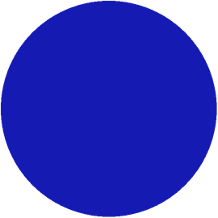
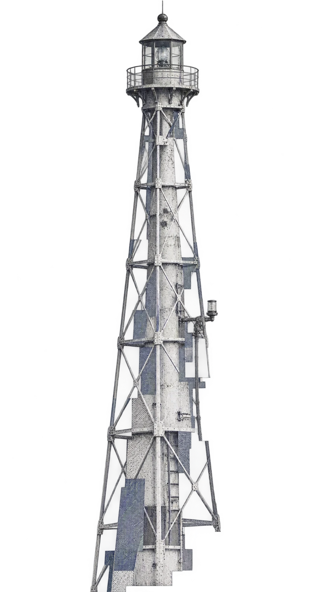
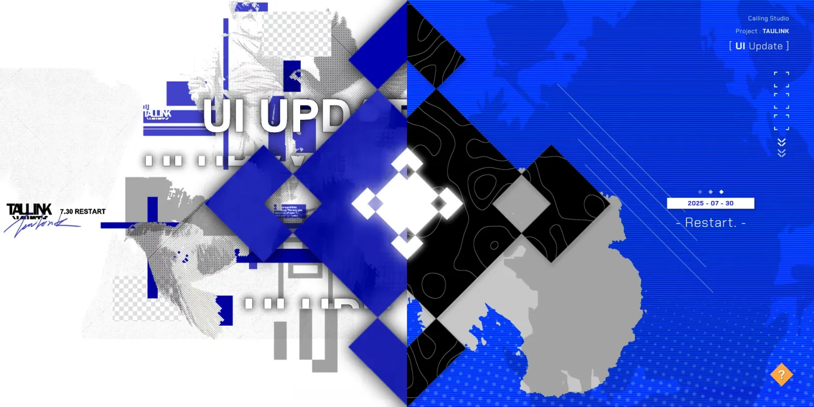

 THE AI AGE / A DIALOGUE WITH HANNAH ARENDT
THE AI AGE / A DIALOGUE WITH HANNAH ARENDT

正在准备开场…


THE AI AGE / A DIALOGUE WITH HANNAH ARENDT

此设备未能显示三维场景。你仍可阅读、比较场景说明并留下批注。
身份来自各单元的最终选择，取牌揭示本轮结果。
摄像头只在本机识别手势。